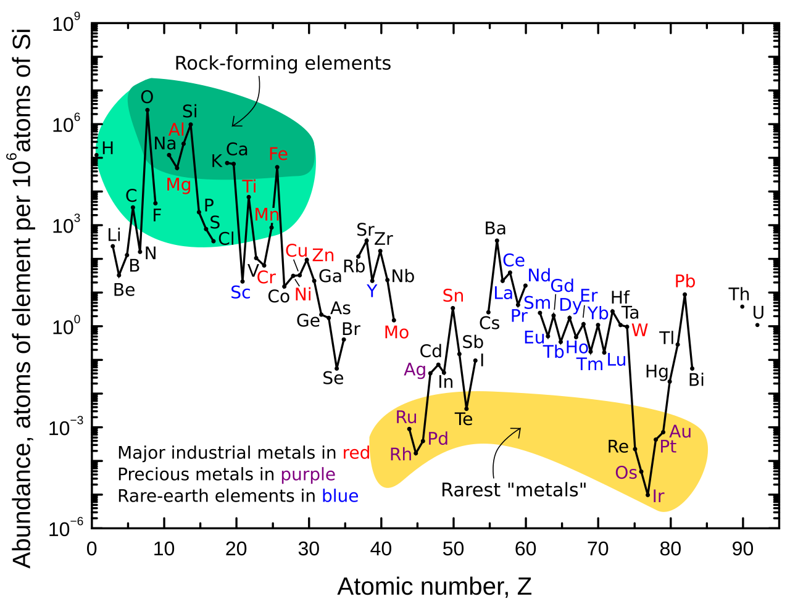
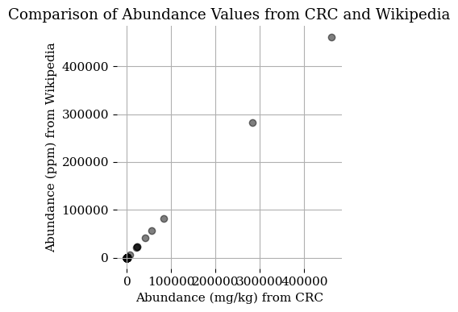
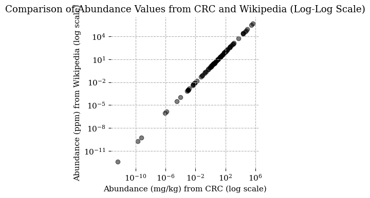
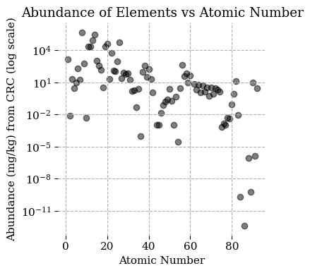
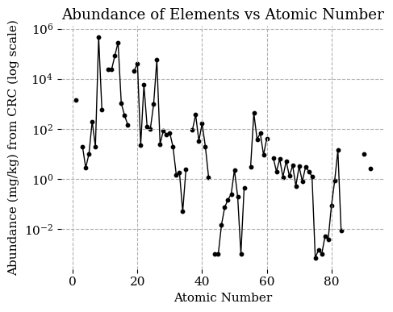
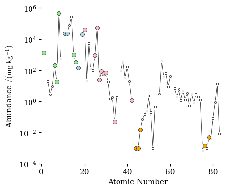

Plot of Elemental Abundance#
Let us explore data analysis as we consider the selctivity of living chemistry for the elements. We have a plot of the relative abundance of elements in the Earth’s crust presented by Remick, 2023. Can we reproduce that plot? perhaps we should compare different data sets? Could we compare the abundance of elements in the universe, the planet earth, the crust, the sea and living things? First we will find data and then we will play with it.
An Plot of Elements in the Earth’s Crust#
In the paper referenced in the textbook is a plot of the abundance of elements in the earth’s crust.
Remick, K; Helmann, J.D., ``The Elements of Life: A Biocentric Tour of the Periodic Table.’’ Adv. Microb. Physiol., 2023, 82, 1–127. https://doi.org/10.1016/bs.ampbs.2022.11.001. Subscription access. Open access available at https://pmc.ncbi.nlm.nih.gov/articles/PMC10727122/.
{kind=link}

Figure 5 The plot presented in the Remick, 2023 paper and on WikiPedia.#
That plot was not made by the authors but was an openly available image from the Wikimedia Commons. The authors did reference the wikipedia page for that the image but gave the wrong link (a typographical error). Here is the correct link and the link to the image: https://en.wikipedia.org/wiki/Abundance_of_elements_in_Earth%27s_crust. The image itself can be found on the Wikipedia commans at https://commons.wikimedia.org/wiki/File:Elemental_abundances.svg.
{kind=link}
Where Did That Data Come From#
Remick et al. state that the data for the plot came from the CRC handbook. At our university we have access to the latest version via the library’s subscriptions.
“Abundance of Elements in the Earth’s Crust and in the Sea,” in CRC Handbook of Chemistry and Physics, 106th Edition, 2025, John R. Rumble, ed., CRC Press/Taylor & Francis, Boca Raton, FL.
The web version only served up the data in short blocks, and I had to copy and paste the data into excel and then export as CSV and edit it into a propper format.
I saved this data set as FromCRC.csv. We can peek at its contents using the Python code below.
| record | name | symbol | number | CAS Reg. No. | crust mg kg-1 | sea mg kg-1 | |
|---|---|---|---|---|---|---|---|
| 0 | 1 | Actinium | Ac | 89 | 7440-34-8 | 5.500000e-10 | NaN |
| 1 | 2 | Aluminum | Al | 13 | 7429-90-5 | 8.230000e+04 | 0.00200 |
| 2 | 3 | Antimony | Sb | 51 | 7440-36-0 | 2.000000e-01 | 0.00024 |
A Second Data Set#
I found the same data reported on Wikipedia (the contributors referenced the CRC). One quick scheck of the datasets would be to see if they have the saem numbers. I Cut and pasted the wikipedia data table, editted it for formatting and had to replace the non-standard hyphen used throughout with a regular ASCII hyphen character (cutting and pasting from web pages can pull in some wierd unicode characters).
I saved this data as ElementsInCrust-Wikipedia-CRC.csv and it is loaded with the Python code below.
| number | name | symbol | Goldschmidt | Abundance (ppm) | percent | extraction (tonnes/yr) | |
|---|---|---|---|---|---|---|---|
| 0 | 8 | oxygen | O | Lithophile | 461000.0 | 46.10 | 10335000.0 |
| 1 | 14 | silicon | Si | Lithophile | 282000.0 | 28.20 | 7200000.0 |
| 2 | 13 | aluminium | Al | Lithophile | 82300.0 | 8.23 | 57600000.0 |
The first thing that I note is that the percentage column makes no sense. The “talk” page associated with the wikipedia page was discussing this obvious erroneous calculation back in 2023. I can’t say why they have not corrected this. We don’t need it, so I won’t bother fixing it. The extraction column is derived from many sources: some are ores, some are refined metals, some are oxides of elements. In the end it is meaningless data as it uses many non-comparable sourtces. The Goldscmidt classification is something for geologists, I guess.
The abundance in ppm would be the same using as mg/kg used in the CRC data. So the numbers shoulkd be the same if I copied/editted everything correctly. Since the two data sets went through different processing, I hope that any errors that were created will be unique to just one of the sets and stand out when they are compared.
Combining the Two Data Sets#
The Pandas library provides many tools for manipulating data.
| numberCRC | nameCRC | symbolCRC | crust mg kg-1CRC | Abundance (ppm)Wiki | |
|---|---|---|---|---|---|
| 0 | 89 | Actinium | Ac | 5.500000e-10 | 5.500000e-10 |
| 1 | 13 | Aluminum | Al | 8.230000e+04 | 8.230000e+04 |
| 2 | 51 | Antimony | Sb | 2.000000e-01 | 2.000000e-01 |
Are They the Same?#
It looks good over the three rows shown. We can perform a test to check is the two columns of numbers representing elemental abundance from each data set are identical.
The abundance values in both DataFrames are exactly the same.
The abundance values in both DataFrames are approximately the same.
A Visual Check#
A quick and easy way to see how two data sets compare is to graph one against the other. Here we will plot the two sets of abundance values. If they are both the same for each element we shpuld get a stricght line.

A Log-Log Plot#
the plot above reveals that most of the data is for very small relative abundances. ten elements make up 99% of the crust. the other seventy or more in the data set are present in small amounts. To see all the data better let us use a log scale.

Reproducing the Elemental Abundance Plot#
We can sue either data set, now that we know they are identical. I will plot abundance vs atomic number. Will we get something similar to the plot from wikipedia?

The above plot does not resemble the Wikipedia plot. It includes more elements. I could have the plot tool display the atomic symbols as labels but they would all be on top of each other. So I will make an interactive plot using a different plotting tool. Mouseover the plot below to interogate each point.
Click here to See Interactive Plot (just in case it doesn’t appear on this page).
We see that our plot includes the noble gasses, which are very rare on Earth and some of the higher mass highly radiactive elements that are also very rare (they have decayed away).
remove Noble Gasses and Short-Lived Elements#
I will repeat the interactive plot above but will remove the extremely rare elements form the data set.
Click here to See Interactive Plot (just in case it doesn’t appear on this page).
This plot looks more like the Wikipedia plot. It’s interactive too. Mouseover to query each point.
A Close Copy of the Wikipedia Plot#
By editing the data set to remove elements that were not included in the wikipedia plot and plotting the data in groups I can make a plot that will be as similar as possible to the plot presented on Wikipedia. The code below may look busy, but it just a series of commands give in order. Its not a real program. Also it was written by MS Copilot. I don’t know how to program, but I am willing to monkey around.
Compare my plot with the literture version, which I will reproduce just below asa well.

Here is the plot from Wikipedia, again.
Figure 6 The plot presented in the Remick, 2023 paper and on WikiPedia.#
A Confession#
The plot above is very similar to the wikipedia plot, but has some significant differences. Observe elements 44, 45 and 46 (ruthenium, rhodium and palladium) in both plots and you will see what I mean. Remek et al. present a plot sourced from Wikipedia but state that they are using data from the CRC handbook. We see here that the data set used for the wikipedia plot is not the same as the data set in the CRC handbook. The data used in the Wikipedia plot is from the paper below. The wikipedia plot is presented there and we have found its original source. However, no data tables are presented.
Haxel, G.B.; Hedrick, J.B.; Orris, G.J., “Rare Earth Elements—Critical Resources for High Technology: USGS Fact Sheet 087-02”. https://pubs.usgs.gov/fs/2002/fs087-02/. Accessed April 30, 2026.
Remek et al. state that they will use the CRC data in their analysis and discussion. I misinterpretted that as them saying that that data was used to make the plot. I went through this whole rabbit hole trying to confirm if the CRC data set would give the plot (close, but not exact) and could have saved myself some work if I had read the figure legend more carefully.
The Plot for the Textbook#
Now that I have decided to use the data set of the CRC handbook (the data used by Haxel et al. was not made available) and reproduced the plot with that data, I will make the plot in the style that I use in the textbook.
The code below will make the above plot using the Tufte style for MatPlotLib. the code below uses the Plotly library and produces an interactive plot.
Click here to See Interactive Plot (just in case it doesn’t appear on this page).
This plot has the crisp and uncluttered style that I prefer. It’s interactive too. Mouseover to query each point.
the Final Plot#
I am more experienced with MatPlotLib than Plotly and will make my final plot using that library.

<Figure size 500x400 with 0 Axes>
This image was exporetd as a PDF and edited using Affinity Publisher to add element labels.
More#
https://web.archive.org/web/20190518224615/
http://www.kayelaby.npl.co.uk/chemistry/3_1/3_1_3.html
https://web.archive.org/web/20190506031327/http://www.kayelaby.npl.co.uk/
https://web.archive.org/web/20190518224615/http://www.kayelaby.npl.co.uk/chemistry/3_1/3_1_3.html
Hamilton, E.I., “Geobiocoenosis: The chemical elements and relative abundance in biotic and abiotic systems.” Sci. Total Environ., 1988, 71, 253–267. https://doi.org/10.1016/0048-9697(88)90197-0
https://en.wikipedia.org/wiki/Composition_of_the_human_body
https://bionumbers.hms.harvard.edu/search.aspx?task=searchbytrmorg&log=y&trm=Biosphere These numbers alegedly from John Harte, Consider a Spherical Cow: A Course in Environmental Problem Solving, Berkeley. 1988. University Science Books p.243 VIII. The Elements table 1 978-0935702583 Borrow it from https://archive.org/details/considerspherica00hart In UPEI Library at QH541.15.M34 H37 1985
Fun fact - Human moeclulat formula https://bionumbers.hms.harvard.edu/bionumber.aspx?id=111244&ver=4&trm=elemental+abundance&org=
DiGiacomo J, Rose GD, Williams LD. The master molecule that built biology: How water shaped the chemistry of life. Protein Science. 2026;35(5):e70532. https://doi.org/10.1002/pro.70532